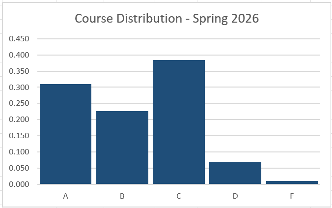
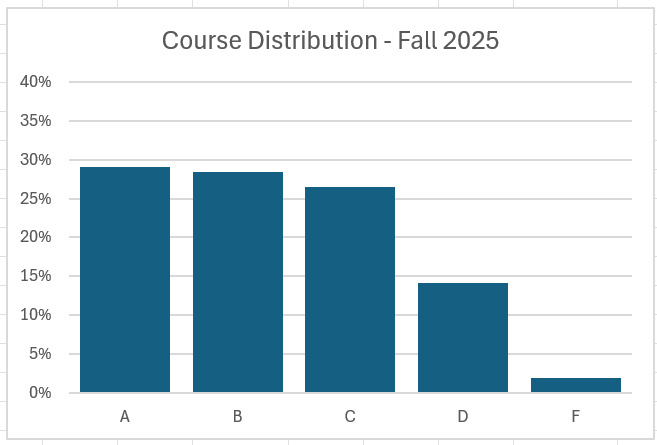
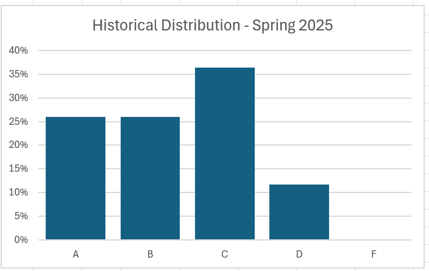

FAQs
This page will contain answers to Frequently Asked Questions. Use the Table of Contents links in the sidebar to quickly move to a specific question/topic.
Many cadets have expressed excitement for the course, and shared tips from friends/peers on how to be successful in the course.
“I’m also skeptical of cadet cynicism affecting how people communicate the reality of this course, as I have on multiple occasions loved courses which others told me were terrible. I’m excited for the class overall and curious to see for myself what the grading system ends up being like”
“interesting because it incorporates AI in a modern way”
“the way posit cloud operated was very cool and intuitive”
ability to “validate’ the final is a nice change”.
“very excited to try a different layout to a course”
“excited because its new”
“not too bad as long as students keep up with readings and spend sufficient time reviewing material each day”
“extremely helpful for the world around us”
“as long as I complete my assignments I can pass the class”
“I am excited to be in the class and have a positive mindset towards it”
“I haven’t heard anything about it, going to just see how it goes for myself”
Some of the cadets in the course haven’t heard much about it yet, or are “excited” and feeling “positive” about the coming semester, the content of the course, or the move away from traditional points.
This is by far the most frequently mentioned concern. Students have heard that the grading system is confusing, maybe frustrating, and subjective. Many reported hearing it was difficult to understand how to earn good grades. Some students heard that there was a lack of consistency in the grading, with “similar answers” earning a range of grades, and some heard it’s difficult to track your letter grade throughout the course.
Standards-based grading
Standards-based grading is about measuring your learning against clear, pre-defined standards rather than just adding up points. Instead of asking “How many points have I earned?” the question becomes “How well have I mastered the skill or concept?” Your grade reflects what you can consistently do by the end of the course—skills and understanding you’ll actually use later.
Subjectivity of grades
All grading is subjective. Even in points-based courses, your instructors subjectively decide whether to subtract 2 or 10 points for various mistakes.
Standards-based grading is typically more objective than traditional grading because everyone is measured against the same clear expectations, you get multiple opportunities to show what you know, and early mistakes don’t hold you back if you improve. It’s also easier for instructors to be consistent because they don’t have to figure out how many points to deduct. Instead, instructors are comparing your work to the proficiency levels defined in the course letter.
Why It’s Beneficial to You
Standards-based grading places the focus on learning, not chasing points. Mistakes early on don’t doom you — you can show growth and still earn the highest marks. In the real world, no one cares if you once got 72% on a project — they care whether you can actually do the task now. Think about learning to drive — You don’t “average” your early driving mistakes with later successes to decide if you get your license. You keep practicing until you meet the standard for safe driving. That’s what standards-based grading does — it certifies that you’ve actually mastered the skills, not just accumulated enough points.
Understanding the Proficiency Levels
We’ve named these proficiency levels to mirror one example of standards-based grading you’ll see in your careers as AF/SF officers. Federal employees are scored using standards-based grading on annual appraisals/performance plans, and pilots are scored using standards-based grading when qualifying on an aircraft.
When pilots want to qualify on an aircraft, they have to pass checkrides. Those checkrides are scored as Q1, Q2, or Q3. This semester, each standard in the course will be scored on a similar scale: Exceptionally Qualified, Q1, Q2, or Q3.
Based on previous cadet feedback, we have carefully defined these proficiency levels. Previously, an answer had to be perfect to earn a Q1. This semester, we recognize an instructor-level answer as Exceptionally Qualified and it is completely optional to attain that proficiency level. Your grade will be based on the amount of Q1, Q2, and Q3 standards you earn throughout the semester.
Based on previous cadet feedback, we include opportunities throughout the semester for you to see what a Q1, Q2, and Q3 response looks like, prior to the GRs. We also encourage you to seek EI if you’re not sure what a Q1, Q2, or Q3 answer might look like for a certain type of question.
Tracking Your Grades
We will provide a spreadsheet grade tracker as a resource to you, so that you can track your proficiency throughout the semester. Additionally, every cadet will receive a list of the core competency standards descriptions and their current proficiency levels for each GR, to help you in deciding which problems should be completed. And you’re always able to chat with your instructor about where you stand in the course!
Grades going into the Final Exam
Some cadets are entering the course with the belief that it is impossible to have a good grade before the final, that everyone walks into the final with an F. This is not quite the case, so let’s break this down a bit.
In a points-based course, the final exam must be worth at least 25% of the course grade. Let’s say you’re in a points-based course worth a total of 1000 points and the final is worth 250 of those points. Then everyone is walking into the final with a C (assuming you have all 750 points available so far) or lower.
What’s different about this course is that you will have seen and been tested on all 12 core competency standards prior to the final exam, and you’ll have another chance to attempt any of those 12 on the final exam. You have to attend your scheduled final exam time and write your name on the exam, but you can complete as much or as little of the final exam as you choose.
Final Grades in the Course
Some cadets heard the grading system was so harsh that “a lot of people ended up on academic probation at prog” or that “everyone left with poor grades” in past semesters. Neither of these statements is true.
In Spring 2025, 52% of the course (40/77 cadets) earned an A or B. In Fall 2025, 57% of the course (89/155 cadets) earned an A or B. In Spring 2026, 54% of the course (198/365 cadets) earned an A or B.
The grade distribution for the last three semesters are shown below.
 |
 |
 |
Your final grade in this course is primarily based on your achievement of the 12 core competency standards. The professional development standards are largely completion based, and the application standards relate to homework, specialties, and the group project. These other categories can either “plus up” or “downgrade” your course grade, based on the amount of time and effort you put into the course assignments.
Grading Consistency
We did get feedback that some students compared answers on GR questions last semester and felt like the same answer resulted in different scores for different cadets. The main reason for this is differences in communication on GRs - communication is very important in statistics and there was a wide range on GRs. Apparent discrepancies in grades were almost always the result of correct/incorrect terminology or more/less effective communication in cadet answers.
Reading Guides
There are 14 reading guides before prog (Lessons 1-16) and there are 21 reading guides after prog (Lessons 18-41). The cutlines for reading guide proficiency levels are provided below.
Completing 90% of reading guides will result in a Q1 score for the respective standard.
Completing 75%-89.99% of reading guides will result in a Q2 score.
Completing 60%-74.99% of reading guides will result in a Q3 score.
Completing fewer than 60% of reading guides will result in a CBA score.
Homework Assignments
There will be 9 homework assignments throughout the semester, with 2-3 assigned during each block of the course. Each homework assignment will consist of an online Concept Check and a hand-written Core Competencies component. HW9 will consist of only an online Concept Check.
Homework for each block will total to 100 pts, with 60 pts attributed to the Concept Checks and 40 pts attributed to the Core Competencies workout problems. The breakdown of HW assignments by block is shown below.
Block 1:
HW1 Concept Check (30 pts), HW1 Core Competencies (20 pts)
HW2 Concept Check (30 pts), HW2 Core Competencies (20 pts)
Block 2:
HW3 Concept Check (30 pts), HW3 Core Competencies (20 pts)
HW4 Concept Check (30 pts), HW4 Core Competencies (20 pts)
Block 3:
HW5 Concept Check (30 pts), HW5 Core Competencies (20 pts)
HW6 Concept Check (30 pts), HW6 Core Competencies (20 pts)
Block 4:
HW7 Concept Check (20 pts), HW7 Core Competencies (20 pts)
HW8 Concept Check (20 pts), HW8 Core Competencies (20 pts)
HW9 Concept Check (20 pts)
The four standards correspond to the each block of homework. The cutlines for HW proficiency levels are provided below.
Earning a total of 80/100 pts (80%) or higher on the block homework will result in a Q1 score for the respective standard.
Earning a total of 60/100 pts (60%) or higher on the block homework will result in a Q2 score.
Earning a total of 40/100 pts (40%) or higher on the block homework will result in a Q3 score.
Earning fewer than 40/100 total pts on the block homework will result in a CBA score.
This is not a new way of teaching or grading. The field of statistics education has been moving toward simulation-based statistics and emphasizing the use of technology and data in introductory statistics courses for the last 15 years.
Standards-based grading is not used widely at USAFA, but it has been mainstream in higher education for more than 10 years and there is extensive research about its benefits for students.
Students reported the course being “unorganized and ran confusingly”. There’s concern about managing “so many platforms (Posit Cloud, R, NotebookLM, GenAI, Teams, Blackboard, GradeScope)”. Questions were raised about how to “study for a GR / Final and finding resources to study from”.
Organization of the course
To be honest, this course was unorganized and somewhat confusing for the first iteration in Spring 2025. A lot of this came from the effects of the stress and churn of the spring semester on civilian faculty and it being the first time the course ran. We have done a lot of work since that first experimental semester to simplify and organize components of this course and improve our communication wherever possible.
Platforms used in the course
We will do our very best to help you manage the different platforms in the course. All graded work will be submitted in Gradescope. Assignments requiring code or PDF files with integrated text and code will be completed in Posit Cloud and submitted via Gradescope. There are many GenAI tools out there, but we’re going to emphasize Gemini Notebook (NotebookLM) this semester. You are welcome to use other tools as you are comfortable. Course communication will be in Teams.
We will only use Blackboard for submitting prog and final grades, so you do not need to interact with Blackboard in this course.
Studying for GRs
We’re confident that past GR questions are available to you in the Cadet Wing, so those problems are a good resource to study for GRs. The Core Competency component of the homework assignments consists of past GR questions. Additionally, we encourage the use of GenAI tools to create your own practice problems/examples when studying for GRs. You should provide an example problem wherever possible, but GenAI tools can personalize practice problems based on the lesson or course learning objectives, the core competency standards descriptions, or your own interests.
While some heard the course was “not too bad”, a significant number of students heard the course is “very interesting and challenging” and “relatively difficult” with a “heavy course load”. Students expressed concern about “how much time outside of school this class will take up” and its overall workload. Additionally, one student wrote “I have heard that this classes medal system (or Q system), while less punishing, is way more time consuming than points based.”
Daily Battle Rhythm of the course
We are asking you to complete daily pre-flights (interactive reading guides), graded for completion, to prepare for class. We don’t expect you to understand all concepts or examples before class. We just expect that you complete the reading assignment, interact with the NotebookLM reading guide in a meaningful way, and bring questions to class.
Based on cadet feedback from past semesters, we have removed daily GPsets (group problem sets) and several other completion-based assignments from the course. We’ve also reformatted and streamlined homework assignments to better prepare students for GRs.
This course is a 3-credit hour course. The expectation for all 3-credit hour courses is for every one hour class session, you should spend 2 hours outside of class working on that course. If you have DataSci 220 on a Monday, Wednesday, Friday in a given week, that means you should expect to spend ~6 hours outside class on the course that week.
Non-math penalties / grading for terminology
We did get feedback that some students compared answers on GR questions last semester and felt like the same answer resulted in different scores for different cadets. Apparent discrepancies in grades were almost always the result of correct/incorrect terminology or more/less effective communication in cadet answers.
This is not a pass/fail class and we don’t expect you to know all the concepts verbatim. That being said, communication is very important in statistics. Much of the GRs are focused on concepts and communication rather than calculations or code. To master a certain core competency standard, you need to be able to correctly implement and communicate about a particular topic. Also, there are three things we expect you to know “word-for-word” in this class by the end of the semester, but we’ll footstomp those A LOT so you know what to expect.
Comparisons to old versions of Intro Stats
The old versions of Math 300, Math 356, and Math 377 covered the same four blocks of content that we’ll cover this semester. All three courses used R/RStudio in the Posit Cloud environment, and all three courses emphasized simulation-based inference over more traditional methods like using t- and Z-tables.
This is not a ‘harder’ version of Math 300 nor is it an ‘easier’ version of Math 356. This course is a brand new course that combines the populations from Math 300, 356, 377 and BehSci 332 and makes adjustments as appropriate.
A common theme is the integration of coding and artificial intelligence. Students are concerned about “working with some artificial intelligence that may be unfamiliar” and that there is “a lot of coding involved”. Many expressed discomfort with or a “difficult” learning curve for RStudio, as they “have not used it before this class” or needed to remember how to use it.
This is not a coding class. You will be expected to use code on specialties and the group project, but we encourage you to use your resources (example code provided in class, Google, Stack Overflow, GenAI tools like ChatGPT, etc.). We will always provide scaffolded code the first time we introduce you to a coding skill in R. We will never ask you to generate code from scratch in a timed environment (GRs) and we do not expect you to memorize code for this course.
Computing tools
We are utilizing computing tools like Posit Cloud (R/RStudio) as a resource. Modern statistics cannot be separated from technology, and trust us - you don’t want to run these models or create visualizations by hand. While we acknowledge there can be a learning curve with RStudio/Posit Cloud, we will provide you with what you need when you need it (in regards to using Posit Cloud). We also put out some supplemental resources for those interested - see the RStudio folder under the Files tab in our course team.
GenAI tools
Being able to use GenAI tools such as NotebookLM, ChatGPT, and other platforms is an essential skill for future AF/SF officers and anyone entering the job market today. In fact, Secretary Hegseth put out a release about GenAI.mil, saying, “I expect every member of the Department to log in, learn it, and incorporate it into your workflows immediately. AI should be in your battle rhythm every single day. It should be your teammate. By mastering this tool, we will outpace our adversaries. The power is now in your hands.”
We will not be grading you on any work that depends on GenAI tools. For the reading guides, we’re requiring you to interact with NotebookLM in a meaningful way, and we provide prompts to get you started. This is our way of trying to train you in responsible use of the tool and we’ll continue to provide examples and prompts throughout the semester.
We recommend the following when prompting GenAI for practice problems. A strong prompt includes the following four elements:
Role: Who should the GenAI tool act as? (e.g., a statistics instructor, a STEM tutor, a commander)
Task: What do you want the GenAI tool to do? Clear, specific instructions for what you want it to do
Output: What should the response look like? Format, structure, tone, number of problems, with or without solutions. This is a great place to provide an example from our GPset or from the reading (e.g., please provide practice problems similar to this one from my notetaker).
Context: What background does the GenAI tool need? Provide background materials (assignment instructions, rubric, this student is a Biology major, etc.)
Pro Tip: Before submitting your full prompt, ask the AI: “What else do you need to know to complete this task effectively?” Then revise your prompt accordingly.
Documentation Statements
Some students have said “I am concerned with documentation because it is really lengthy and I fear I could make a mistake and miss something.” Please be assured that we approach GenAI usage and documentation as skills that you need to develop. We aim to help you grow in the responsible and proficient use of GenAI tools this semester. And we provide clear guidance and examples of proper documentation!
Also, remember that if your instructor suspects you utilized GenAI tools without co-creating or with insufficient documentation, they will meet with you first to discuss and find ways to improve your usage and/or documentation. You may be asked to redo any graded work as deemed appropriate by your instructor and/or the course director. If there are recurrent issues related to GenAI usage or documentation, it may result in initiation of the honor process and/or an academic penalty.
A significant concern among past students in the experimental class is that they wouldn’t be “as prepared for [Math] 378” in terms of “the level of difficulty of using the content,” even if “the content is pretty much the same”. Math 377 students are “hoping to still get the same information as we would have if we had taken the regular course while also learning about it in a more manageable format” in the experimental class.
The DataSci 220 course will fulfill the core requirement for statistical reasoning that was previously filled by Math 300/356/377 or BehSci 332. It will also count as the prerequisite for Math 378 Applied Statistical Modeling, for any students required to take or interested in taking that course. We can assure you that this course will prepare you for Math 378 - Dr. Hitt and Dr. Hauschild-Eastman have been the course director of Math 377/378 for the past five years, so you’re in good hands!
The primary difference between Math 377 and this course is that we’ve removed some of the advanced probability topics. These topics are not necessary for Math 378 and many statisticians don’t see those topics until graduate school. Some of these advanced probability topics will be available to you as one of four specialties that you will choose as part of the Application standards. All DF departments are aware of this change, and we are working with some of them to prepare major-specific specialties in the DataSci 220 course.